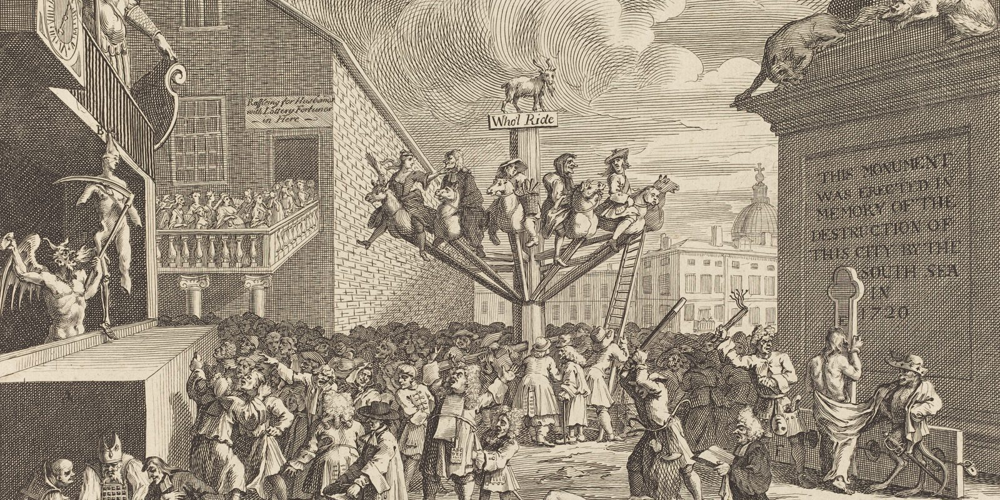
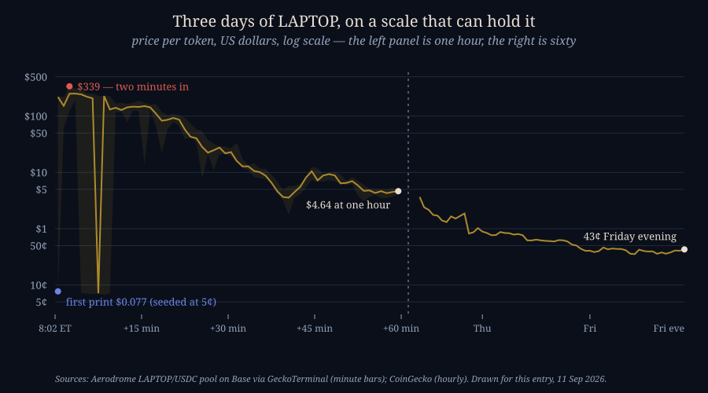
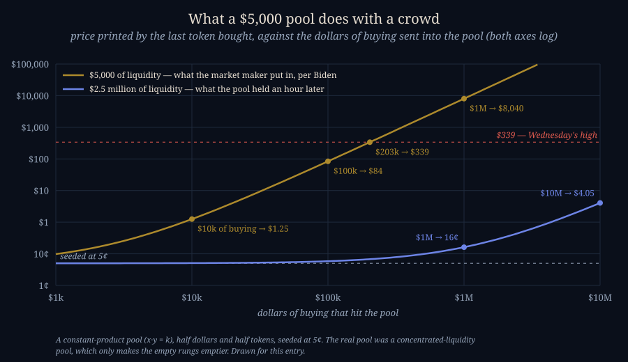

The Laptop That Was Worth More Than BlackRock for Two Minutes
SEPTEMBER 11, 2026

At 8:02 on Wednesday morning, Eastern time, a token called LAPTOP started trading on Base, the Ethereum layer-two run by Coinbase. The first trade I can find on the main pool went through at 7.7 cents. Within the same minute the pool printed $229. Two minutes after that it printed $338.83. There are a billion LAPTOP tokens, so for the length of a red light the arithmetic said Hunter Biden's memecoin was worth about $339 billion — "larger than BlackRock," as Biden himself put it. An hour later it was $4.64. On Friday evening, as I write this, it is 43 cents.
Biden's own account of it, in a video he posted Thursday night, was blunter than most post-mortems: "The f**k up occurred in the first 30 seconds of launching the coin, in which the market maker, for some unknown reason, only put in $5,000 of liquidity, and the demand was through the roof." I read Scott Melker's summary of that video on Friday morning with one question: how could this even happen? It's a fair question, and the answer is not "crypto is a casino." The answer is a specific piece of arithmetic that anyone who buys a token on a decentralised exchange should understand before they do, because it is the machine that turned five thousand dollars into a market cap larger than an asset manager with more than ten trillion dollars under management, and then turned eleven thousand wallets red before most of them had finished their coffee.

What a Memecoin Launch Actually Is
When you buy a share of Apple, there is an order book: a list of people offering to sell at $100.10, $100.11, $100.12 and so on, and your order eats through it one price at a time. If a crowd shows up, the book gets eaten faster, but every price on it was set by a human who agreed to sell there.
A token on a decentralised exchange has none of that. It trades against a pool: a smart contract holding some dollars (usually the stablecoin USDC) and some of the token, and a rule for pricing them against each other. The classic rule — the one Uniswap made standard in 2018 and nearly every pool since is a variation on — is that the product of the two balances must stay constant. Dollars in the pool times tokens in the pool equals a fixed number, k. You send dollars in; the contract works out how many tokens it can give you while keeping the product where it was; the price you paid is simply whatever that ratio happened to be. There is no seller on the other side of you deciding the price is fair. There is a formula, and the formula has no opinion.
The consequence is that the price moves by exactly as much as your purchase is a fraction of the pool. Buy a tenth of what's in the pool and the price moves a bit. Buy ten times what's in the pool and the price moves by a factor of a hundred, because the contract will hand you the last tokens it holds only at a price approaching infinity. The pool cannot run out; it can only get more expensive, without limit.
So the single number that decides what a launch looks like is how much is in the pool when the first buyer arrives. Here is what that formula does with a crowd, for a pool seeded at five cents a token — the foundation's own figure for LAPTOP's opening price — at two sizes: the $5,000 Biden says the market maker put in, and the $2.5 million the pool held an hour later once, in his words, "they got it under control."

Read the gold line. With $5,000 in the pool, ten thousand dollars of buying — one moderately excited person — moves the price from five cents to $1.25, a twenty-five-fold rise. A hundred thousand dollars prints $84. About two hundred thousand dollars prints Wednesday's high of $339. A million dollars, which is less than the first minute's volume on the tape, would have printed eight thousand dollars a token and a "market cap" of eight trillion. Nothing about the token changed between five cents and $339. What changed is that a few hundred thousand dollars arrived at a contract holding five thousand, and the contract did the only thing it is built to do.
The real LAPTOP pool is a concentrated-liquidity pool on Aerodrome, a Uniswap-v3-style design where liquidity providers choose a price range to sit in rather than spreading across every price from zero to infinity. That's more capital-efficient when the pool is deep and the price is calm, and it is worse in a launch, because outside the range the provider chose there is nothing at all: the price doesn't climb a steep ladder, it teleports between the rungs that exist. I can't reconstruct exactly what shape the liquidity was in at 8:02. The tape, with its seven-cent and $250 trades in the same minute, is consistent with a ladder that was mostly missing.
Where the $316 Billion Came From
"Market cap" for a stock means something: shares outstanding times a price at which real people are buying and selling real quantities. For a token two minutes old it means the last print, whatever it was, multiplied by the total supply, whatever that is. Multiply $339 by a billion tokens and you get $339 billion. Biden's video used $316; Arkham, the blockchain analytics firm, said $144 billion of "fully diluted valuation" against $48,000 in the pool; CoinDesk reported a $190.81 high, CoinMarketCap $222.75, CoinGecko $199.51, and the pool's own minute bars say $338.83. Every outlet has a different peak because there was no peak in any sense that matters. There were individual trades, each one clearing at whatever the formula spat out for that block, and some of them were absurd.
Here's a way to feel the number. At $339 billion, the amount of money it would have taken to sell every LAPTOP token at that price was zero, because nobody could. The pool had a few tens of thousands of dollars in it. A market cap is a price times a quantity; here the price was real for about one transaction's worth of tokens and imaginary for the other 999,999,000. "Bigger than BlackRock" was a true statement about a multiplication and a false statement about the world, and the people who lost the most on Wednesday were the ones who mistook the first for the second.
Who Was on the Other Side
The pool was created at 2:27 that morning, UTC, and trading opened nine and a half hours later. Everyone who had read the project's disclosures knew the contract address, the opening time and the five-cent seed price. That includes the bots. "Sniper" bots watch new pools, pay a premium to have their transaction land in the very first block after liquidity goes live, buy at the seed price, and sell into the humans who arrive seconds later. On a $5,000 pool this is not even a race; it is a formality. The first minute of the tape shows $1.38 million of volume. The second shows $2.83 million. By the time the price was $339, the bots that had bought at eight cents were the ones selling.
Bubblemaps, another analytics firm, counted the damage at the end of the day: about 80 percent of the wallets that bought LAPTOP were underwater. Two of them lost between $100,000 and a million dollars. About a hundred lost more than $10,000, about seven hundred lost more than $1,000, and roughly eleven thousand lost smaller amounts. On the other side, one wallet cleared $1.18 million. The reply I keep thinking about is from someone who wrote that they "bought it at a $100B market cap" and were down 99 percent, "almost a full 10 years of savings down the drain." That person did what the number on the screen told them to do. The number was the problem.
The people who did well were the ones who bought at the price the project actually set. Anyone who paid five to ten cents and held is up four- to eight-fold at tonight's 43 cents. That is the strangest fact in the whole story: measured from its published opening price, LAPTOP has gone up. Measured from any price a human being was able to see on a chart in the first hour, it is down 90 to 99.9 percent. Both are true. Only one of them describes what happened to the money.
What the Foundation Says Happened
The token is issued by something called the Phoenix Veritas Foundation, whose X account was suspended within hours of the launch — they relayed their statement through Medium on Wednesday evening instead. Their version agrees with Biden's on the mechanism: "The initial LAPTOP pool launched at $0.05 per token into significant demand, making it a target for predatory sniper bots... The market maker's initial liquidity was insufficient to meet this demand, and resulted in a sharp price spike up and down before liquidity could catch up." They committed four million tokens — 0.4 percent of supply — to liquidity incentives on Aerodrome from midnight UTC on the 10th, and said two of the project's "prediction" events had already resolved, burning ten million tokens.
The statement also makes a case that I think is worth taking seriously, because it is the opposite of the usual celebrity-coin story. There was no presale and no allocation to influencers. The contract address, the full allocation, a security audit and a whitepaper filed with the Dutch regulator were, they say, all published before trading. The founders' 30 percent is locked for six months and vests over two years in Coinbase Custody. Twenty percent went to an airdrop for Biden's Substack subscribers, with a stated intention to include people who lost money on the TRUMP token. And the last line of the statement is one I have never seen a token issuer write down: "You should not expect us or anyone else to make this token more valuable for you. LAPTOP was built to say something."
Biden's video went further on ownership. "It is my f**king token. I've been working on this thing six months straight," he said, and: "This is not some bulls**t celebrity token where I get on Twitter and say 'I didn't know about this.'" He said he is in it "to the end, a hundred percent," and that the team is working to get more liquidity and volume into the market. Whatever else you think of it, that is a man putting his name on the failure rather than on the launch.
What neither statement explains is the thing everyone wants explained: why the pool opened with five thousand dollars in it. The on-chain record that CoinDesk traced shows the market maker, GSR, receiving 15.5 million tokens four days before launch, and the project's multisig moving a hundred million tokens around in the week before. A market maker's job is to have inventory on both sides at the open. Somebody had the tokens; somebody decided, or neglected to decide, how much of that inventory and how many dollars went into the pool at 8:02. "For some unknown reason" is Biden's phrase, and as of Friday night it is still the only one on offer.
The Fallout, Three Days On
- The price kept falling after the crash. The one-hour price of $4.64 was not the bottom; it was the top of a second, slower decline. LAPTOP traded around $1.70 by Wednesday evening, 80 cents by Thursday morning, and touched 33.5 cents late Thursday night. Tonight it is about 43 cents — down 91 percent from the "stabilised" price an hour after launch, and 99.9 percent from the high. Circulating market cap is about $150 million; fully diluted about $417 million — now below the TRUMP token's, a comparison LAPTOP was winning an hour after launch.
- The project's X account was suspended within hours. It was still down when Biden relayed the foundation's statement on Wednesday night, and everything official since has come through Medium or through his own account.
- Exchanges distanced themselves, then listed it anyway. Kraken deleted a post promoting the token before launch after traders piled into the replies; it is now trading on Kraken, KuCoin, Bitvavo and Bitpanda, and reachable through Coinbase's and Binance's on-chain products.
- The airdrop is open for thirty days at laptoptoken.com to Substack subscribers who joined before September 6, at a minimum of 784 tokens each — about $340 at tonight's price, a little over $265,000 at Wednesday's high. Unclaimed tokens are burned.
- Andrew Callaghan of Channel 5 disowned it. After reports that his mailing list was included in the airdrop, he wrote that his outlet has "not, do not, and never will advertise crypto," and that the addresses were removed before the announcement.
- The politics wrote itself. Eric Trump: "Hunter should go back to painting." Biden had spent his recent media appearances criticising the TRUMP token as grift, which is why the launch attracted more hostility from crypto traders than from Republicans — one prominent trader called it "an utter embarrassment" before it had even opened.
- Ten million tokens have been burned and four million committed to liquidity rewards, per the foundation. Neither has done anything visible to the price.
Why the Pattern Is Familiar
The TRUMP token launched in January 2025 and went to about $73 within two days on the same mechanism at a larger scale — a thin pool, a flood of buyers, a market cap that briefly read in the tens of billions. It trades around $2.25 now, 97 percent below its high; CoinDesk counts nearly a million wallets holding it at a combined loss of $3.8 billion. LAPTOP was marketed partly as a rebuke to that token and even promised an airdrop to its victims. It then reproduced its first day in fast-forward, on a pool a thousand times thinner, because the mechanism doesn't care who launches on it or why.
I run a small fleet of trading programs on my own brokerage account, and the reason this story landed with me is that the very first thing every one of them checks before it buys anything is the spread — the gap between the price someone will sell at and the price someone will buy at. If that gap is wider than about eight-tenths of a percent, the program refuses the trade, on the reasoning that a price you cannot get out of is not a price. At 8:02 on Wednesday, the effective spread on LAPTOP was, for practical purposes, infinite: you could buy at $339 and the most you could have sold the same tokens for a block later was whatever a $48,000 pool would give you for them, which is not $339. Every buyer in that first hour was trading through a gate my bots would have slammed shut, and the fact that a chart showed a number does not mean a market existed at it.
A price is a claim that someone will pay it. A market cap is that claim multiplied by everything you own. When the someone is a formula in a contract holding five thousand dollars, both numbers are exactly as real as the pool behind them, and no larger.
Where I Could Be Wrong
- The $5,000 is Biden's number. Arkham saw $48,000 in the pool at the moment of the $144 billion print, and the pool held $2.5 million an hour in. All three can be true at different seconds of a launch in which liquidity was being added in a hurry; I've used his figure for the gold line because it's the one he chose to put on the record, and the shape of the argument doesn't change at $48,000.
- The toy model is a constant-product pool. The real one is concentrated-liquidity, which changes the exact dollars-to-price mapping and, as I said above, generally makes a thin launch thinner. Treat the chart as the principle, not a reconstruction of the block-by-block state.
- The seven-cent prints in minutes four to nine are on the pool's own tape and I've drawn them as such. It's possible they are dust trades, or an artifact of how the data provider aggregates the pool's tick ranges; either way they don't affect the argument, and I'd rather show the tape than tidy it.
- The loss figures are Bubblemaps' count on launch day, before the second leg down. They will be worse now.
- I don't own it, long or short, and none of my programs are permitted to buy anything like it. I'm writing about the machine, not the man.